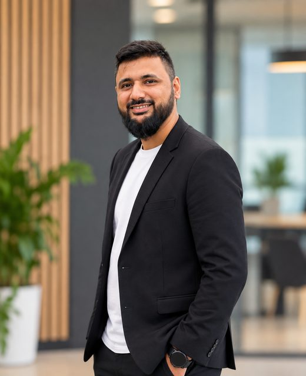

Odoo ERP · Python · DevOpsSaifuddin Rupawala
Odoo ERP Team Lead and Developer
I build and run Odoo systems for businesses, from custom modules and data migrations to servers and deployment pipelines. Ten years of Odoo work, the last few leading a development team.
{
'name': 'Saifuddin Rupawala',
'summary': 'Odoo ERP Team Lead and Developer',
'version': '18.0.10.0', # Odoo 6 → 18, 10 years
'category': 'Services/ERP',
'depends': [
'sale', 'purchase', 'account',
'stock', 'mrp', 'point_of_sale',
'hr_payroll', 'website',
],
'external_dependencies': {
'python': ['psycopg2', 'requests'],
'bin': ['docker', 'git'],
},
'license': 'LGPL-3',
'installable': True,
'application': True,
}
Developer first, now also the person who runs the team
I started with an Odoo internship in 2015, became a full-time Odoo developer in 2016, and have worked on implementations, customisations and migrations since. As team lead I hired developers through university campus interviews, built the team, and wrote the training plan that brought new hires up to speed on Odoo development.
I also look after the infrastructure side: Ubuntu servers, Docker, CI/CD and AWS. That means I can take a project from requirements to a running production system. I work in English, Gujarati and Hindi.
Where I have worked
Odoo ERP Team Lead
Techsprint Global Pvt Ltd
- Led the Odoo development team and ran delivery with Agile/Scrum in Jira.
- Delivered custom modules across Sales, Purchase, Accounting, MRP, POS, Quality Control and HR & Payroll, from requirements to go-live.
- Hired developers through campus interviews and created the onboarding and training plan for Odoo development.
- Worked with an in-house MCP server that connects Odoo to AI and LLM tooling.
- Handled Git, GitHub Actions, Docker and AWS setups for client deployments.
Software Developer
Entrivis Tech Pvt. Ltd.
- Migrated a client's database and custom code from Odoo 6 to Odoo 14, the biggest challenge of the role.
- Delivered several smaller Odoo projects, including a retail bakery and coffee system in Kuwait on Odoo 16.
- Built the development team and ran short training sessions for developers.
Software Developer
Bista Solutions Inc
- Odoo development on client implementations.
Intern, then Software Developer
Serpent Consulting Services Pvt. Ltd.
- Started with a college internship in Oct 2015, followed by Odoo training, and joined as an employee in 2016.
- About five years of Odoo development, working on several large projects, from custom modules to full implementations.
- Built payroll, invoicing and reporting systems for clients in Singapore, Sudan, Afghanistan, Nigeria and the US.
- Gave onsite go-live support and user training in Nigeria (2018) and Afghanistan (2019).
- Received the Project Assistance award on the company's 7th Annual Day, December 2018.
What I work with
Odoo development
Odoo migration
DevOps and servers
Team and client delivery
AI integration
Integrations
Projects: the problem, what I did, and the result
Pick a project to see the details. Client screens are not shown to protect client data; each project has a simple diagram of how the parts connect instead.
Implementations
Migrations
Integrations & AI
Tools & team
Afghan Personnel & Pay System
Problem
- Payroll for a national workforce was open to corruption, including salaries paid to fraudulent “ghost” employees.
- Records had to be auditable across a very large user base.
What I did
- Built a government ERP on Odoo covering personnel records and payroll.
- Developed audit reports that flag suspicious and duplicate “ghost” records.
- Gave onsite go-live support and end-user training in Afghanistan (2019).
Result
- Live system covering 650,000+ personnel and 300,000+ users.
- Auditors got reports to spot and remove fraudulent records.
How it fits together
- Personnel records
- Payroll engine
- Audit reports
- Ghost-record flags
Techlong: multi-company rollout
Problem
- One business ran three companies in three countries and needed them on one ERP with shared finance reporting.
What I did
- Rolled out Sales, Purchase, Inventory, Accounting, HR & Payroll and MRP.
- Built finance reports across the three companies.
Result
- All three companies run on one Odoo setup with consolidated finance reports.
How it fits together
- India co.
- Dubai co.
- China co.
- One Odoo DB
- Finance reports
Zafco: 15+ companies on one database
Problem
- A group of more than 15 companies needed to work from a single Odoo database, with barcode-based stock work and outside tools connected.
What I did
- Supported the multi-company setup on one database.
- Added barcoding.
- Built integrations with Google Drive, Shopify and Power BI.
Result
- 15+ companies operating on one Odoo database, with sales, documents and BI reporting connected.
How it fits together
- Shopify
- Odoo (15+ companies)
- Google Drive
- Power BI
OC2Me: customer order portal
Problem
- Customers needed to place orders themselves, and the system had to meet UAE ISO requirements.
What I did
- Built Sales, Purchase, Inventory and Accounting.
- Built a public portal where customers create their own orders.
Result
- Orders come in directly from customers through the portal into Odoo, on a setup that meets the UAE ISO requirements.
How it fits together
- Customer portal
- Sales order
- Inventory
- Accounting
Vasaindica: retail, POS and eCommerce
Problem
- A retail business sold in store, online and on consignment, and needed all channels in one system.
What I did
- Implemented Sales, POS and consignment orders.
- Integrated WhatsApp, Shopify, an eCommerce website and the PhonePe payment gateway.
Result
- Store, online and consignment sales are handled in one Odoo system with payments and customer messages connected.
How it fits together
- POS / Shopify / Website
- Odoo Sales
- PhonePe
Pittsburgh Spray
Problem
- Online orders and shipping had to be connected to sales, stock and accounting.
What I did
- Implemented Sales, Purchase, Inventory, Accounting and CRM.
- Integrated Shopify and the shipping partners UPS, DHL and Shippo.
Result
- Shopify orders flow into Odoo and ship through the connected carriers.
How it fits together
- Shopify
- Odoo
- Shippo / UPS / DHL
Elite Horizon: intercompany
Problem
- Three related companies traded with each other and needed those transactions recorded on both sides.
What I did
- Implemented Sales, CRM, Payroll and Accounting for the three companies.
- Set up multi-company intercompany transactions.
Result
- Intercompany sales and purchases are created and booked automatically across the three companies.
How it fits together
- Company A
- Intercompany rules
- Company B / C
Retail bakery & coffee system
Problem
- A bakery and coffee retailer needed Odoo customised for its shop operations.
What I did
- Developed and customised Odoo 16 modules and third-party integrations.
Result
- The retailer runs its bakery and coffee operations on Odoo 16.
How it fits together
- Shop / POS
- Custom modules
- Odoo 16
SETCO: Odoo 9 → 16 migration
Problem
- The client needed to move from Odoo 9 to Odoo 16, a jump of seven versions with no official Odoo migration support.
What I did
- Planned the migration strategy.
- Wrote custom scripts to migrate the database directly from v9 to v16.
- Took the system live on v16.
Result
- The client runs on Odoo 16 with its historical data carried over.
How it fits together
- Odoo 9 DB
- Custom migration scripts
- Data checks
- Odoo 16 live
Odoo 6 → 14 code and database migration
Problem
- A client's system and custom code were still on Odoo 6, eight major versions old.
What I did
- Migrated the database and rewrote the custom code for Odoo 14.
Result
- The client moved to Odoo 14 with historical data intact. The biggest migration of that role.
How it fits together
- Odoo 6 DB + code
- ETL / OpenUpgrade
- Rewritten modules
- Odoo 14
In-house Odoo MCP server
Problem
- AI assistants had no safe, structured way to read Odoo data or run ERP workflows.
What I did
- Worked on an in-house Model Context Protocol (MCP) server that connects Odoo with AI and LLM tools.
Result
- AI tools can read ERP data and act on Odoo workflows through the MCP server.
How it fits together
- AI assistant / LLM
- MCP server
- Odoo JSON-RPC
- ERP data
MES integration: cake manufacturing
Problem
- Manufacturing and shop-floor steps on a cake-making line were tracked by hand.
What I did
- Automated MRP and shop-floor operations in Odoo.
- Integrated Odoo with Tulip (MES).
Result
- Production orders and shop-floor activity are connected between Odoo and Tulip.
How it fits together
- Odoo MRP
- API
- Tulip MES
- Shop floor
FMCG bottling plant
Problem
- A soft-drink bottling client needed a hosted Odoo setup and quick alerts when orders came in.
What I did
- Configured Odoo.sh.
- Built a WhatsApp integration that sends order alerts.
Result
- The client runs on Odoo.sh and gets order alerts on WhatsApp.
How it fits together
- New order
- Odoo.sh
- WhatsApp alert
Bank reconciliation software
Problem
- Matching Tally entries against bank statements by hand took a lot of time.
What I did
- Built a standalone, offline Python application for Windows, macOS and Ubuntu.
- It reads PDF, image, Excel and CSV bank statements and several Tally files at once, then matches the entries.
- Licences are configured in Odoo and generated by the system.
Result
- Entries are matched automatically and the reconciled result can be exported. The app links with Odoo for licensing.
How it fits together
- Tally files + bank statements
- Python matcher
- Reconciled export
- Odoo licence
Delivery pipelines
Problem
- Releasing module changes to client servers was manual and differed from project to project.
What I did
- Built CI/CD pipelines with GitHub Actions and Docker-based deployments on AWS (Ubuntu).
Result
- Module changes reach staging and production the same way every time.
How it fits together
- Git push
- GitHub Actions
- Docker image
- AWS staging / prod
Team building and onboarding
Problem
- The company needed a development team that could deliver Odoo projects, starting from fresh graduates.
What I did
- Hired developers through university campus interviews.
- Designed a structured Odoo training plan.
- Ran delivery with Agile/Scrum in Jira.
Result
- New hires reached development-ready speed and the team delivered projects across Sales, Purchase, Accounting, MRP, POS, Quality and HR & Payroll.
How it fits together
- Campus hiring
- Training plan
- Scrum team
- Client delivery
- Odoo 16 Technical Certification.
- Project Assistance award from Serpent Consulting Services Pvt. Ltd. on its 7th Annual Day, 8 December 2018.
Let's talk about your Odoo project or team
Hiring for a Team Lead or Odoo Developer role, or need a freelance Odoo project done? The CV has the full history.
Download CV (PDF)